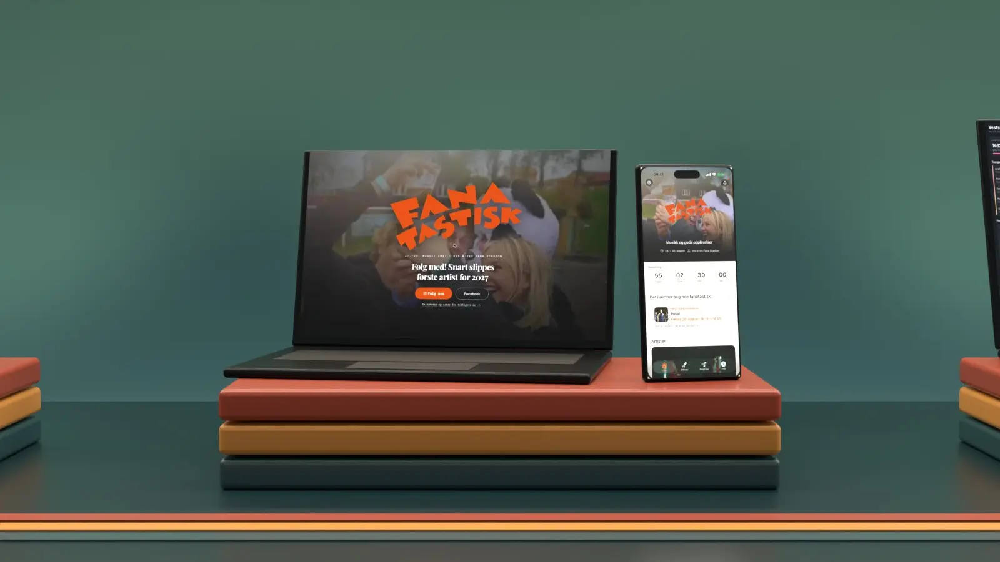
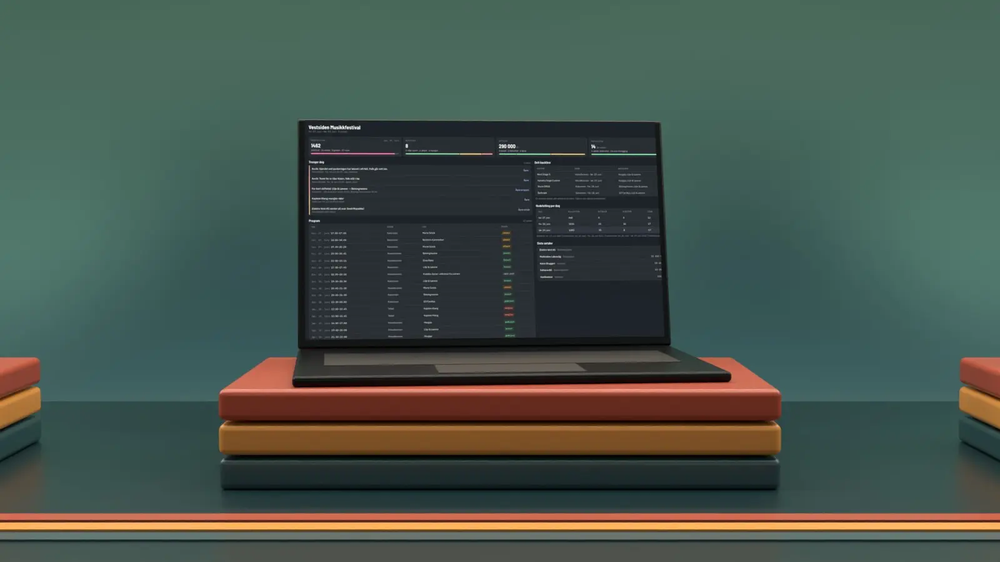
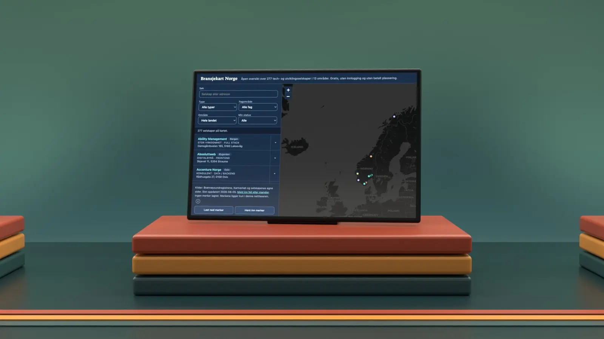
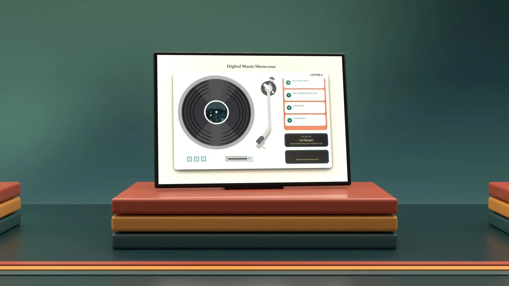

Fanatastisk
Musikkfestivalen i Fana fikk nettside og app, bygget på det samme innholdet. Festivalen redigerer alt selv.
- 5 558 besøkende på nettsiden i festivaluken
- Appen godkjent av Apple på under et døgn

Jeg er Christian Hermansen. Jeg bygger det du trenger, og jeg bygger det sånn at du kan drive det selv etterpå.
Musikkfestivalen i Fana fikk nettside og app, bygget på det samme innholdet. Festivalen redigerer alt selv.

Et system for festivaldrift. Artister, program, frivillige og budsjett på ett sted, i stedet for i fem regneark.

Et åpent kart over tech-selskaper i Norge. Det begynte med et regneark på 36 linjer.

En platespiller bygget som nettside. Tonearmen følger låten, og spilleren bytter form etter skjermen du holder.

Tre ting, med samme håndverk i alle. Du får opplæring, og du eier det du har betalt for.
Tegnet for deg, og laget for telefon først.
For iPhone, eller rett i nettleseren.
Små verktøy som tar jobben ingen har tid til.
Som denne. Du ruller, og siden svarer. Historien din kan fortelles på samme måte, i den rekkefølgen du vil ha den.
Driver du noe som gjør det bedre for andre, kan du søke om hjelp uten regning. Ett prosjekt om gangen. Det er måten jeg gir tilbake på.
Du forteller hva som plager deg. Jeg spør mer enn jeg selger.
Du får se tre retninger før noe bygges, og velger selv.
Du følger med underveis og ser det vokse fram.
Du får opplæring og nøklene. Etterpå driver du det selv.
Send en e-post. Jeg svarer selv.
epost@christianhermansen.no